Courtney Faith
Courtney FaithThere’s nothing worse than waking up already defeated. As you transition from your subconscious, sleepy state to your conscious, waking mind, something within just collapses. It’s as though that waking light illuminates the unspoken truth: if the warmth of your bed is still unable to bring you comfort, what can?
You literally haven’t even moved and the wave of hopelessness and helplessness are paralyzing. The day is over before it has even begun.
Or so we believe...
Hah! Of course there’s a catch. This is a self-love blog. What did you expect?
Rewiring those neurons is a gradual, steady process. It takes devotion and persistence. It demands an unshakable commitment to yourself.
Today, my body still occasionally flickers traces of this pain. But, that’s okay. All of this shit is totally okay. The weight of the past can be demobilizing and it’s nothing to be ashamed of. In fact, a great deal of humans feel this way.
Wait, what? Yes. I’m actually not making a bad joke this time.
In 2015, the National Institute of Mental Health completed a survey calculating the prevalence of mental illness in U.S. adults. Turns out, an estimated 43.4 million people (not including the 30% of individuals who 'did not respond') live with some degree of mental suffering. That’s like, if you and your five besties were all hitting the town, definitely one, maybe two, of you are struggling to escape the weight of your brain.
I know, shit.
I want to reiterate though, it’s okay. This alarming statistic should simply serve as a warning. The nature of the present is begging you to please be gentle and for godsake, LOVE YOURSELF.
Judgement cannot heal the mind's wounds. Critizing, demeaning, and invalidating your current expereince only feeds the hurt already circulating through your system. To truly reclaim your life, you must begin with a choice.
Today you must say to yourself: I accept where I am and I know I have everything within me to fully heal now. Even if you don’t believe it, say it. Say it every morning until you do (because THIS IS your fundamental truth).
You are your own Divine comforter - literally.
Cool story. I feel. But, like, what do I do RIGHT NOW?
Well, funny you happened to mention it. Over the years, I have accumulated a list of tunes that have utterly 360'd my day. From Miley to 2Pac, these creators and motivators are my ultimate hype crew. You’d be surprised, a little TLC goes a long way.
So for those of you who feel the past pulling, resentments’ strangling, and anxieties’ swarming, let’s get our jam on.
- Respect - Aretha Franklin
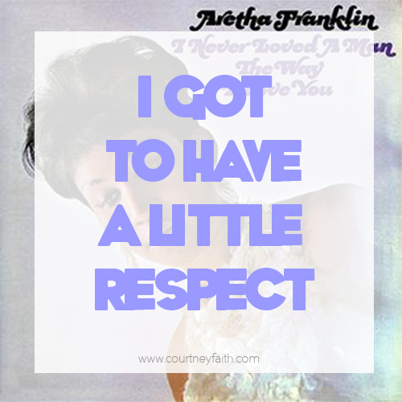
- Rise - Katy Perry
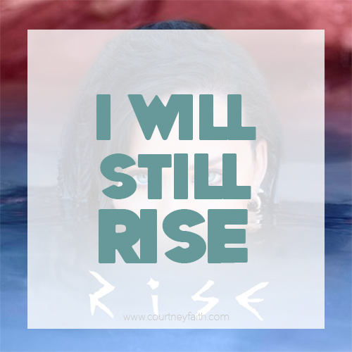
- Footloose - Kenny Loggins
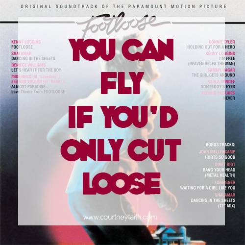
- Only God Can Judge Me - 2Pac
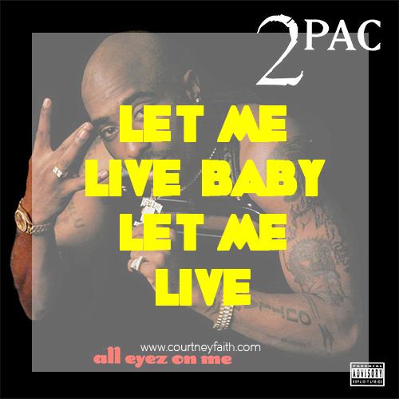
- Titanium - David Guetta ft. Sia
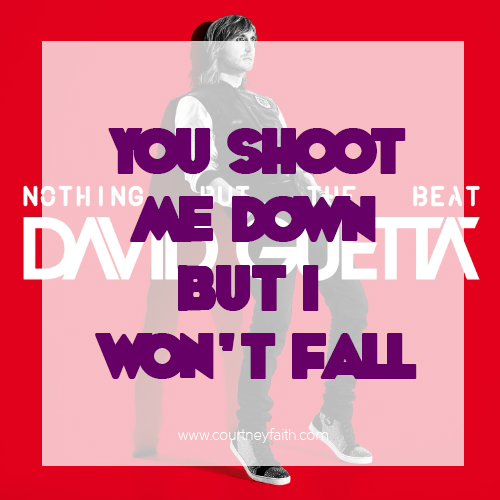
- The Climb - Miley Cyrus
- POWER - Kanye West
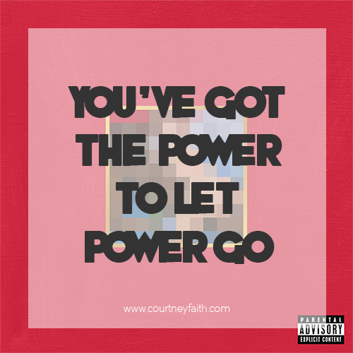
- Piece Of Me - Britney Spears
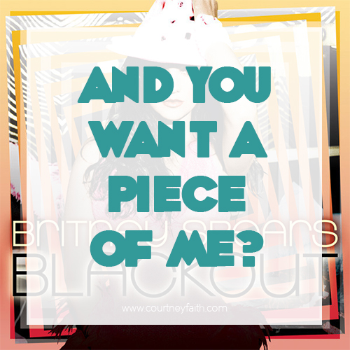
- Knock You Down - Keri Hilson ft. Kanye West & Ne-Yo
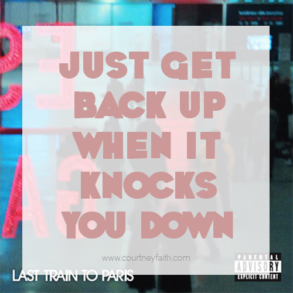
- Who Says - Selena Gomez & The Scene
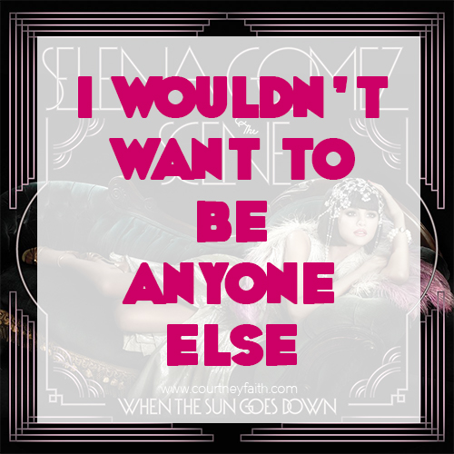
- We Will Rock You - Queen
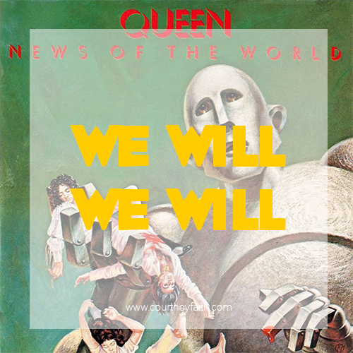
- Fighter - Christina Aguilera
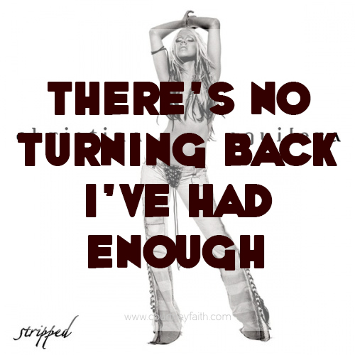
- No Scrubs - TLC
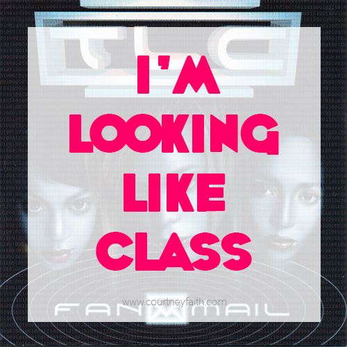
- East Northumberland High - Miley Cyrus
- P.I.M.P. - 50 Cent
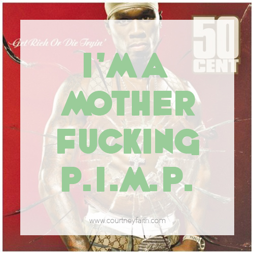
- Roar - Katy Perry
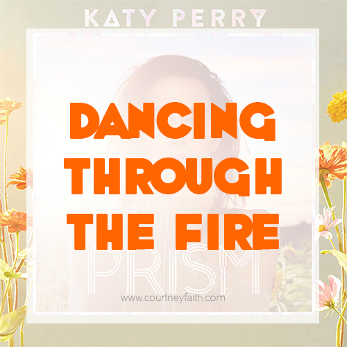
- Flawless - Beyonce
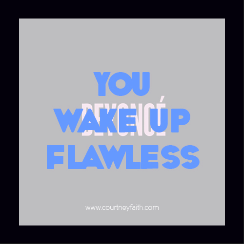
- Pocketful Of Sunshine - Natasha Bedingfield
- I Will Survive - Gloria Gaynor
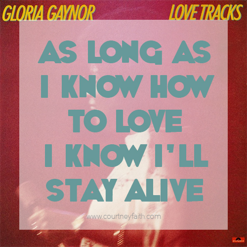
- Scars To Your Beautiful - Alessia Cara
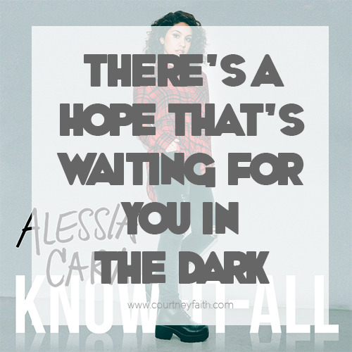
- Coming Home - Diddy ft. Skylar Grey
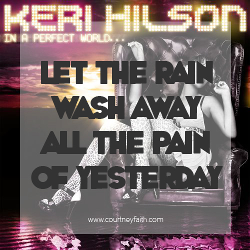
- Party In The USA - Miley Cyrus
- Bohemian Rhapsody - Queen
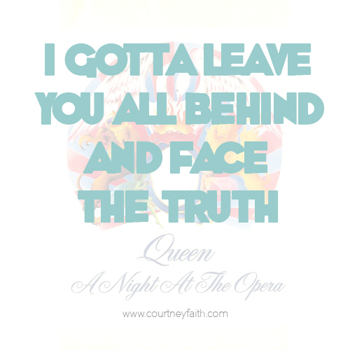
Each of these songs has had a unique place along my healing journey. Whether I am trapped in bed or wadding through traffic, I can click on a song and remember my true essence.
I am love, I am light, and I am going to fucking rock you. And remember, what I am, so are you.
You can find the whole playlist here to crank up and throw down - Yes, please throw down to Hannah Montana. Hell, get freaky to the Hoedown Throwdown.
You deserve to jam solo, dance with friends, and scream sing in your car in complete bliss and utter, IDGAF liberation. This moment is yours to reclaim.